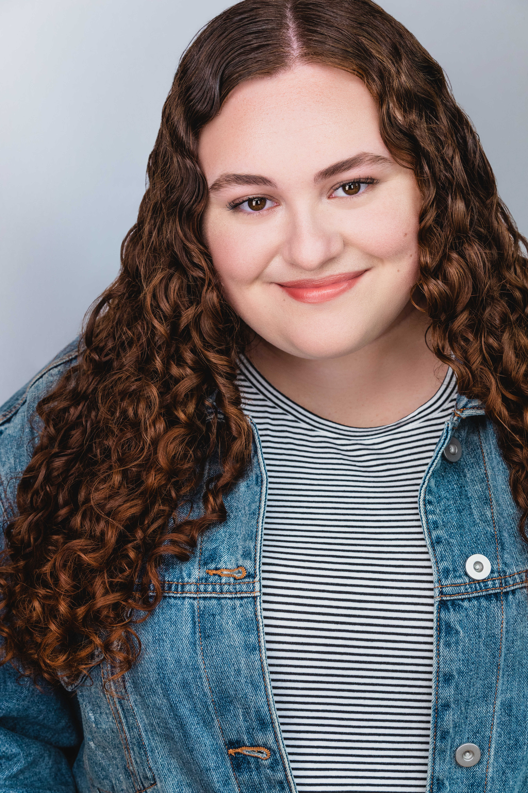

Images Grid


Nicole is a New York City based actor. She was born and raised in NYC and is currently completing her BFA in Musical
Theatre at the University of Miami (FL).
In addition to being on the University of Miami's improv team, UProv, Nicole has taught improv classes through the university's
Theatre Action Group (TAG) for the past three years. She has also taught improv, along with a variety of other theatre classes,
to children ages 6 - 18 at French Woods Festival of the Performing Arts (Hancock, NY) and The Palace Theatre (Manchester, NH).
Whenever she is home in NYC, she takes improv classes at Upright Citizens Brigade (UCB) and writes and performs in
comedy shows. She is the writer and director of KING OF ANYTHING and the co-creator/co-host of THE LAST NIGHT
SHOW, two seperate (but equal) sketch comedy shows at the People's Improv Theatre (The PIT).
Nicole is also a proud alumna of LaGuardia High School for Performing Arts.